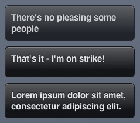

{% include JB/setup %}
{% raw %}
<div>
<div class="book" title="Creating a Growl jQuery Plug-in"><div class="book"><div class="book"><div class="book"><h1 class="title1"><a id="I_sect1_d1e15726" class="calibre1"></a>Creating a Growl jQuery Plug-in</h1></div></div></div><p class="calibre3"><a id="I_indexterm_d1e15730" class="calibre1"></a><a id="I_indexterm_d1e15735" class="calibre1"></a><a id="I_indexterm_d1e15738" class="calibre1"></a>Let’s put our knowledge of jQuery into practice and create a
    Growl library. For those of you unfamiliar with Growl, it’s a <a class="ulink" href="http://growl.info">notification library</a> for Mac OS X that
    applications can use to show messages unobtrusively on the desktop. We’re
    going to emulate the OS X library somewhat and display messages from
    JavaScript in the page, as demonstrated in <a class="ulink" href="apas07.html#fig_a_1" title="Figure A-1. Example Growl messages">Figure A-1</a>.</p><div class="figure"><a id="fig_a_1" class="calibre1"></a><div class="book"><div class="book"><a id="I_mediaobject_d1e15752" class="calibre1"></a></div></div><p class="title4">Figure A-1. Example Growl messages</p></div><p class="calibre3">The first step is to create a <code class="literal">#container</code> div from which all our message
    elements will descend. As you can see, we’re including both jQuery and
    jQuery UI libraries—we’ll use the latter later to add a few effects. When
    the page loads, we’ll append the <code class="literal">container</code> div:</p><pre class="screen">//= require &lt;jquery&gt;
//= require &lt;jquery.ui&gt;

(function($){
  var container = $("&lt;div /&gt;");
  container.attr({id: "growl"});

  $(function(){
    // On page load, append the div
    $("body").append(container);
  });

  /* ... */
})(jQuery);</pre><p class="calibre3">Now for the plug-in’s logic. Whenever we have a new message, we
    append a div to the <code class="literal">container</code> element. We’re adding a
    <code class="literal">drop</code> effect to the message and then,
    after a period of time, fading and removing it—just like Growl’s behavior
    on OS X:</p><pre class="screen">$.growl = function(body){
  // Create the Growl div
  var msg = $("&lt;div /&gt;").addClass("msg");
  msg.html(body);

  // Append it to the list
  container.append(msg);

  // Add a drop effect, and then remove
  msg.show("drop", { 
    direction: "down", 
    distance: 50 
  }, 300).
    delay(2000).
    fadeOut(300, function(){
      $(this).remove();
    });

  return msg;
};</pre><p class="calibre3">That’s all the JavaScript required. It’s looking rather ugly at the
    moment, so we can spice it up with a bit of CSS3. We want the <code class="literal">#container</code> div to be positioned absolutely, at
    the bottom right of the page:</p><pre class="screen">#growl {
  position: absolute;
  bottom: 10px;
  right: 20px;
  overflow: hidden;
}</pre><p class="calibre3">Now let’s style the message elements. I quite like the HUD Growl
    theme, so let’s try to emulate that. We’ll make the background slightly
    transparent using <code class="literal">rgba</code> and then add an
    inset <code class="literal">box-shadow</code>, giving the element
    the appearance of a light source:</p><pre class="screen">#growl .msg {
  width: 200px;
  min-height: 30px;
  padding: 10px;
  margin-bottom: 10px;

  border: 1px solid #171717;
  color: #E4E4E4;
  text-shadow: 0 -1px 1px #0A131A;
  font-weight: bold;
  font-size: 15px;

  background: #141517;
  background: -webkit-gradient(
    linear, left top, left bottom, 
    from(rgba(255, 255, 255, 0.3)), 
    color-stop(0.8, rgba(255, 255, 255, 0))), 
    rgba(0, 0, 0, 0.8);

  -webkit-box-shadow: inset 0 1px 1px #8E8E8E;
  -moz-box-shadow: inset 0 1px 1px #8E8E8E;
  box-shadow: inset 0 1px 1px #8E8E8E;

  -webkit-border-radius: 7px;
  -moz-border-radius: 7px;
  border-radius: 7px;
}</pre><p class="calibre3">That’s all there is to it. You see how trivially easy it is to
    create jQuery plug-ins. As with the other examples, you can see the full
    source in <span class="calibre1"><em class="calibre4">assets/appA/growl.html</em></span>.<a id="I_indexterm_d1e15800" class="calibre1"></a><a id="I_indexterm_d1e15801" class="calibre1"></a></p></div></div>

{% endraw %}

